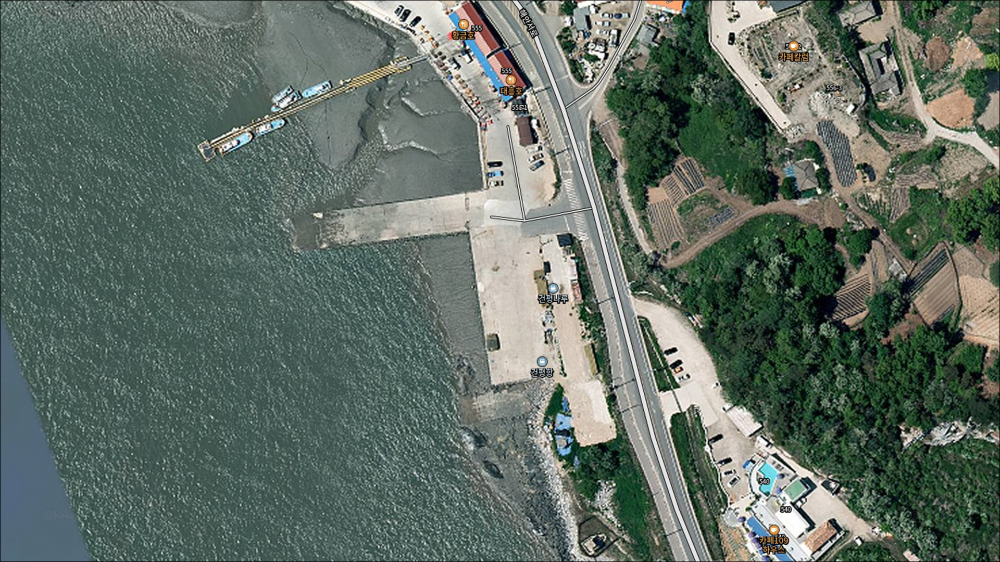
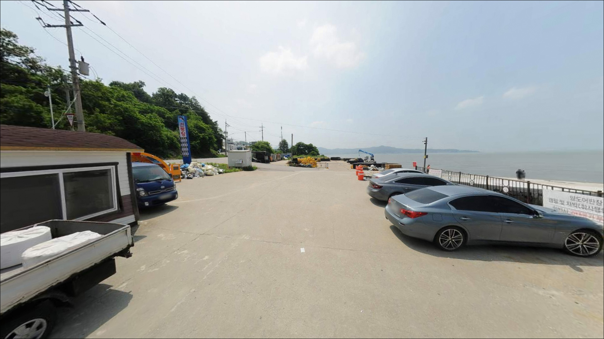
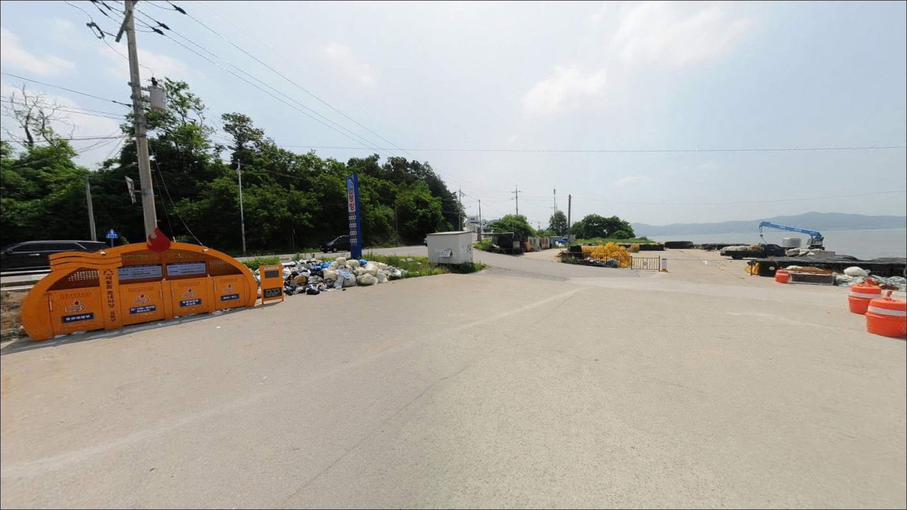
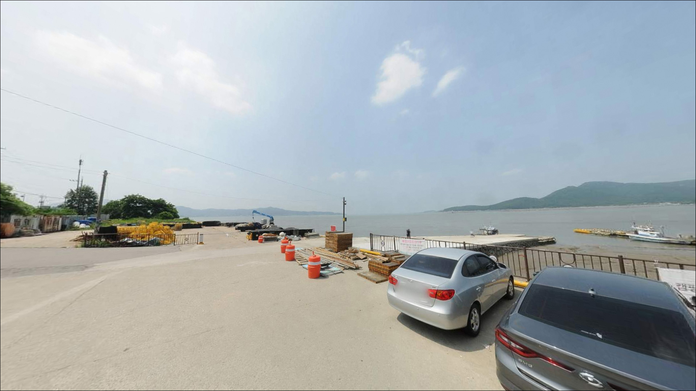
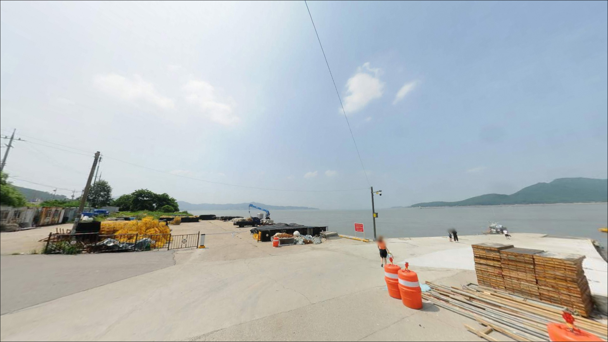
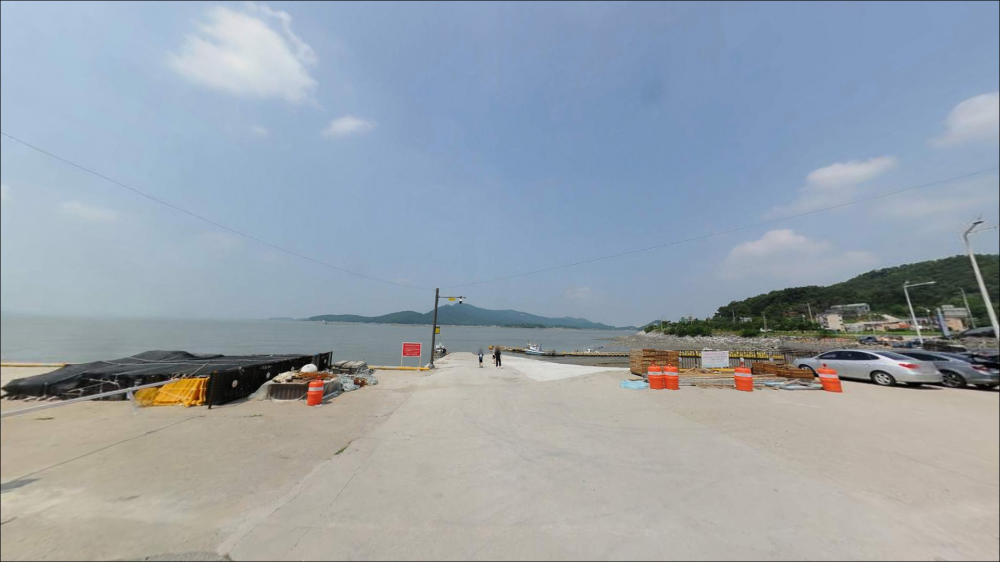
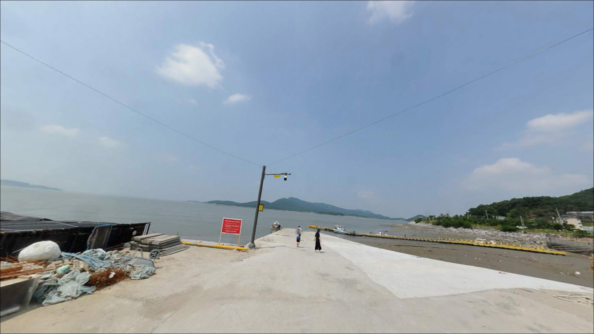
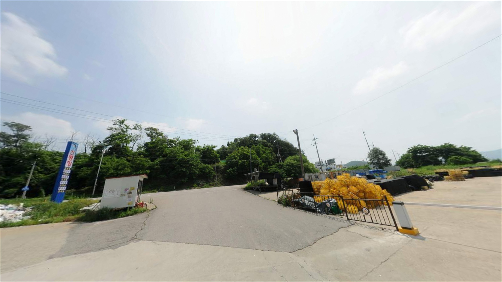
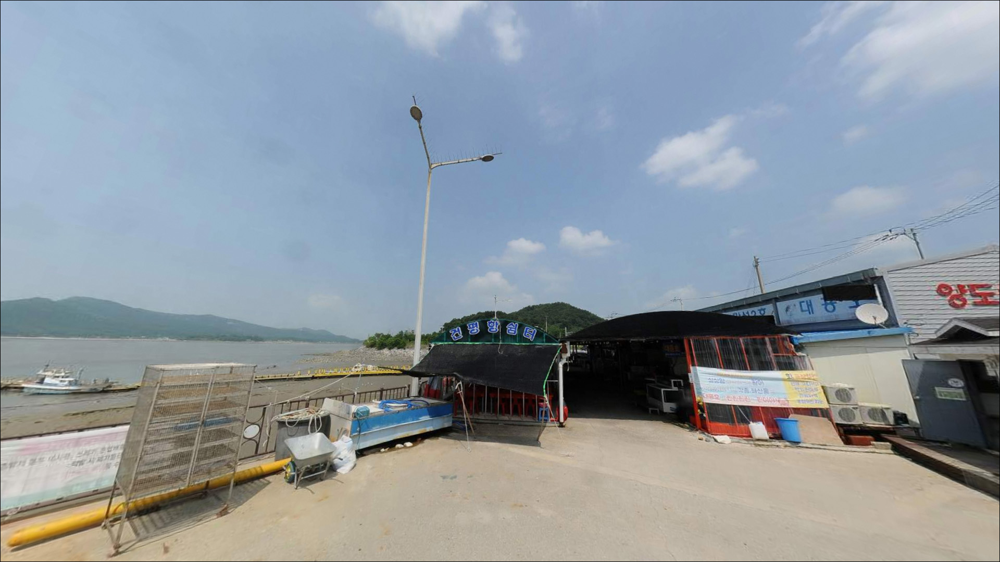

건평항, 강화도 인천 강화군 고요한 수면을 바라보며 차박, 낚시를 즐기기 좋은 해안


포인트 안내
건평항
인천 강화군 양도면 건평리 623-16
강화 양도면 건평항에서 가장 자주 겪는 실수는
물때 확인 없이 출발하는 것입니다.
간조 전후에 도착하면
선착장 앞이 갯벌로 드러나고,
어떤 채비를 써도 낚시 자체가 불가능한
상황이 만들어집니다.
건평항은 강화도 남서쪽 양도면 해안에
자리한 소규모 마을 선착장입니다.
갯벌과 조간대가 발달한 서해 특성상
수심 변화 폭이 크고,
밀물 타이밍이 조과를 결정하는
핵심 변수로 작용하는 포인트입니다.
이 글은 건평항의 진입 여건,
물때 진입 조건, 낚시 스타일별 공략 방향에
집중합니다.
조황 단정이나 특정 어종 보장은
이 글의 범위에 포함되지 않습니다.

1. 위치와 진입 동선
건평항은 강화도 양도면 건평리에 위치하며,
강화 남서쪽 해안도로를 따라
마을 진입로로 접근합니다.
양도면은 강화도 남서쪽에 자리한
작은 행정구역으로,
도심과 거리가 멀어 외진 분위기의
해안 마을입니다.
마을 진입로는 농어촌 수준의
좁은 포장도로 구간이 포함됩니다.
소형·중형 차량은 통행에 큰 어려움이 없는 편이나,
대형 SUV나 캠핑 장비를 갖춘 차량이라면
출발 전 위성지도로 진입로 폭을
미리 확인하는 편이 좋습니다.
선착장 주변은 마을 어선이 정박하는
소형 구조라 주차 공간이 넉넉하지 않습니다.
어선 이동 동선과 어구가 놓인 구간을
피해 자리를 잡는 것이 기본 매너이며,
선착장 접안면 옆 공터를
활용하는 방식이 일반적입니다.

2. 차박 환경과 야간 체류 여건
건평항은 인구가 적은 소규모 어촌 마을에
자리하고 있어 야간에는
차량 통행이 거의 없는 편입니다.
민가 밀집도가 낮아
조용한 분위기는 유지되는 편이지만,
주차 공간이 협소해 차박을
메인 목적으로 삼기에는 부담이 있습니다.
가로등은 선착장 주변에 일부 설치되어
있을 수 있으나,
외진 해안 마을 특성상 야간 조명이
충분하지 않은 환경일 가능성이 높습니다.
야간 낚시를 계획한다면
헤드랜턴과 개인 조명 장비는 필수입니다.
서해 강화 해안은 기상에 따라
바람 영향을 크게 받는 지역입니다.
특히 서풍 계열 바람이 강해지면
해안 체류 여건이 급격히 나빠질 수 있으므로,
출발 전 기상청 해상 예보를
당일 아침 다시 확인하는 편이 안전합니다.

3. 주변 편의시설 및 인프라 현황
건평항 반경 3km 이내는
양도면 소규모 농어촌 마을로 구성되어 있어
편의점이나 마트를 기대하기 어렵습니다.
완전 자급 체제로 진입하는 것이
현실적인 준비 방식으로,
식수, 얼음, 낚시 소품, 비상식량 모두
출발 전에 갖추는 편이 좋습니다.
강화읍 방면으로 이동하면
편의점과 마트를 이용할 수 있습니다.
양도면에서 강화읍까지는
차량으로 상당한 거리가 소요됩니다.
외포리항 방면에 낚시 관련 상점이
운영되는 경우도 있어,
출발 전 소품이 부족하다면
이 동선을 우선 활용하는 편이 효율적입니다.
응급 상황 발생 시 강화군 내
의료 시설까지의 거리가 상당하므로,
비상약품과 구급 용품을
사전에 준비하는 것이 기본입니다.

4. 방문 전 반드시 확인해야 할 사항
건평항 방문 전 가장 먼저 확인할 것은
물때입니다.
서해 강화 해안은 조수 간만 차가
크게 나타나는 지역으로,
간조 전후에는 선착장 앞 갯벌이
넓게 드러나 낚시가 사실상 어렵습니다.
밀물 2~3시간 전 입장하여
만조 전후를 집중 공략하는 것이
이 포인트의 기본 진입 전략입니다.
물때란 하루 두 번씩 주기적으로 반복되는
밀물과 썰물의 흐름을 말하며,
서해에서는 낚시 자리 선택의
핵심 기준이 됩니다.
바다타임에서 강화 기준 물때를 확인하고,
조금 전후 또는 밀물 진행 구간에 집중하는
출발 시각 설정이 권장됩니다.
강화 서해는 기상 변화에 민감한 지역입니다.
해상 특보 발효 시에는
출조 자체를 재검토하는 것이 맞습니다.
갯벌과 석축 구간이 있는 포인트 특성상
미끄럼 주의가 필요하며,
야간 낚시 시 구명조끼 착용은
기본 안전 수칙입니다.

5. 지형 기반 낚시 여건 분석
건평항 일대는 서해 갯벌 지형이 발달한
강화 남서 해안의 특성을 그대로 담고 있습니다.
선착장 앞쪽으로는
조수에 따라 수심이 크게 변하는
조간대 구조가 이어지며,
밀물이 들어올 때 수심이 확보되는 라인이
낚시 자리를 결정하는 기준이 됩니다.
마을 선착장 주변에는 석축이나
접안 구조물이 있는 경우가 일반적이며,
이 구간이 어류가 붙기 좋은
은신처 역할을 하는 편입니다.
바닥은 뻘과 모래가 혼합된 구조로
예상되며, 완전한 암반 지형이 아니어서
원투낚시 채비의 밑걸림은
상대적으로 적은 편입니다.
강화 남서 해안 수로는
물골 흐름이 조류에 따라 형성되는 구간이 있어,
밀물 진행 중 이 흐름을 읽는 것이
자리 선택에 도움이 됩니다.
채비를 멀리 보낼수록 수심이 확보되는
라인을 만날 가능성이 높아,
원투 방향과 거리를 다양하게 시도하는 것이
유효한 방식입니다.
최신 조황은 방문 전에 꼭 검색해 보시기 바랍니다.


6. 낚시 자리 여건이 달라지는 조건
건평항 지형에 가장 잘 맞는 낚시는
원투낚시입니다.
갯벌과 뻘 바닥이 주를 이루는 구조에서
망둥어는 가을철 밀물 타이밍에
입질이 활발한 경향이 있으며,
붕장어는 야간 원투 채비로
연중 노려볼 수 있는 대상어입니다.
선착장 석축 주변을 공략한다면
루어낚시도 시도해볼 만합니다.
석축 기저부 근처에서 우럭과 노래미가
붙어 있는 경우가 있으며,
소형 지그헤드 채비로 바닥을
긁듯이 탐색하는 방식이 어울립니다.
밀물 초기, 물이 석축에 닿기 시작하는
타이밍이 반응을 보기 좋은 구간입니다.
숭어는 강화 서해 전역에서
계절을 가리지 않고 출몰하는 어종입니다.
선착장 주변 수면을 훑는 모습이 보인다면
찌낚시로 수면층을 노려보는 것도
선택지가 됩니다.
숭어는 경계심이 강해
조용한 환경과 가는 목줄이
기본 조건입니다.

7. 대안 포인트와 플랜 B 동선
건평항 조건이 여의치 않거나
물때가 맞지 않을 때는
선두리 방파제가 첫 번째 대안입니다.
강화 남서쪽에 위치한 방파제 포인트로,
원투낚시와 루어낚시 모두
운용하기 좋은 구조이며
진입과 주차 여건도 안정적인 편입니다.
외포리항은 강화 서쪽 해안을 따라
이동하면 닿을 수 있는
항구형 포인트입니다.
규모가 크고 방파제 구조가 뚜렷해
다양한 낚시 스타일을 운용하기 좋으며,
편의시설 접근성도
상대적으로 좋은 대안 거점입니다.
초지항은 강화도를 대표하는
원투낚시 포인트로 알려진 곳입니다.
망둥어 조과 기록이 많고 주차 여건이 편리해,
건평항을 처음 방문한다면
초지항을 기점으로 먼저 익힌 뒤
건평항을 병행 탐색하는 동선이
효율적입니다.

물때를 읽는 낚시꾼에게
건평항이 달라 보이는 이유
원투낚시를 중심으로 강화 서해 갯벌 포인트를
찾는 낚시꾼이라면,
건평항의 지형 조건은
방향성이 분명한 포인트입니다.
물때에 맞춰 진입 시각을 설정하면
서해 갯벌 낚시의 리듬을
그대로 느낄 수 있는 곳입니다.
반면 편의시설이 없는 완전 자급 환경이고,
간조 때 방문하면 낚시 자체가 성립하지 않습니다.
물때 확인 없이 출발하거나
주차 공간 협소함을 예상하지 못하면
헛걸음이 되기 쉬운 포인트이기도 합니다.
물때, 자급 준비, 진입로 확인,
이 세 가지를 갖추고 간다면
조용한 강화 서해 해안의
낚시다운 하루를 만들 수 있습니다.
차박을 겸한다면
주차 공간 여건을 현장에서 먼저 확인하는 것이 순서입니다.
물때 맞춰 낚시 마치고,
조용한 마을 선착장 옆에서 하룻밤 머무는
강화 서해 차박 낚시 출조로
기억에 남을 수 있는 곳입니다.